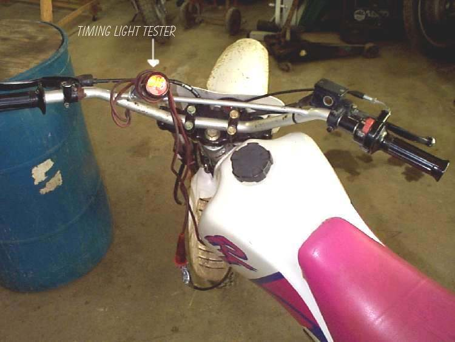
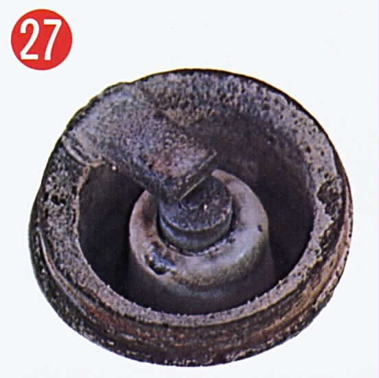

The engine runs well at low and middle speed but stutters, coughs or cuts in and out at high revs. At high revs the ignition has less time to build each spark and the cylinder needs the most fuel, so a weak part in either system shows up there first. The K-Light 125 troubleshooting lists the plug gap first for misfire (PDF page 276). Note: many bikes with CDI or ECU ignition have a rev limiter that cuts the spark at a set speed; a cut that always comes at the same very high reading in every gear may be normal.
Is it safe to ride?
With care. A sudden loss of power when overtaking is dangerous. Avoid high revs until it is fixed.
Quick checks first
- Does the cut come at the same rev reading every time, near the red line? Check whether that is the rev limiter.
- How old is the plug? Is the cap tight?
- Does it misfire in all gears, or only under heavy load (hills, passenger)?
- Does it get worse as the tank gets low, or after a long ride?
- Is the air filter clean?
Diagnose it step by step
1Does it happen at the same very high rev reading in every gear, smoothly, like a soft cut?
- Yes: it may be the rev limiter. Check your manual. Ride below it.
- No: go to step 2.
2Is the plug in good condition and correctly gapped? K-Light 125: 0.7 ± 0.1 mm.
- No: Remove, check, gap and fit a spark plug. A gap that is too wide misfires at high revs.
- Yes: go to step 3.
3Are the plug cap, lead and coil connectors dry, tight and free of cracks?
- No: Test the ignition coil and plug cap.
- Yes: go to step 4.
4Does it get worse after some minutes at high speed, then recover after easing off?
- Yes: fuel is not keeping up. Check the tank vent (Check the fuel tank vent), fuel filter (Replace the fuel filter) and, on fuel injection, the pump (Check the fuel pump (fuel injection)).
- No, it is immediate: go to step 5.
5Is the air filter clean, and (carburettor) is the main jet clean?
- No: Clean or replace the air filter, Clean the carburettor.
- Yes: go to step 6.
6Does a known good coil cure it?
- Yes: the coil is weak at high speed. Replace it.
- No: check the pick-up and its gap: Test the ignition pick-up. Then confirm with a structured Road test to diagnose a fault.
Causes, most likely first
| Cause | How to confirm | Fix |
|---|---|---|
| Rev limiter (normal) | Same cut point every time | No repair needed |
| Worn plug or wide gap | Gap check | Remove, check, gap and fit a spark plug |
| Cracked cap or poor coil connection | Visual; worse in damp | Test the ignition coil and plug cap |
| Fuel starvation (filter, vent, pump) | Worse after sustained speed | Replace the fuel filter |
| Dirty air filter or main jet | Visual; carburettor check | Clean or replace the air filter |
| Weak coil | Swap test | Test the ignition coil and plug cap |
| Pick-up fault | Resistance or peak voltage | Test the ignition pick-up |
Reference values (K-Light 125)
| Item | Value | PDF page |
|---|---|---|
| Spark plug gap | 0.7 ± 0.1 mm | 58, 276 |